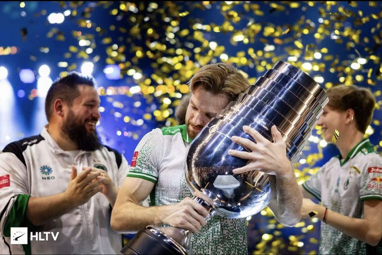
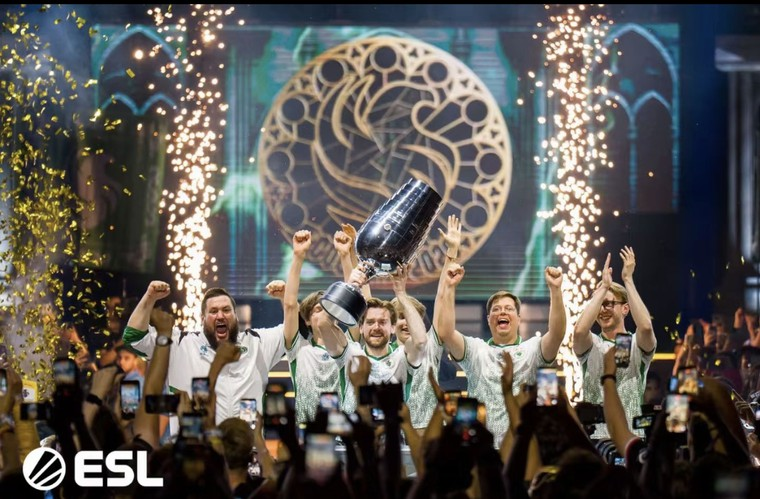

NiKo 圆梦科隆！终夺生涯首座 Major 冠军
新浪电竞讯：在刚刚结束的科隆 Major 上，传奇选手 NiKo 终于圆梦——他随猎鹰战队（Falcons）一路过关斩将，成功捧起职业生涯第一座 Major 冠军奖杯，结束了多年来“无 Major 冠军”的遗憾。捧杯的一刻，NiKo 激动地将奖杯紧紧拥入怀中，无数守候在屏幕前的玩家为之沸腾。

本届科隆 Major 强手如林，共有来自世界各大赛区的顶尖战队参赛。猎鹰战队在小组赛阶段表现稳健，凭借出色的团队配合与个人发挥，以小组头名晋级淘汰赛。
进入淘汰赛后，赛场气氛愈发紧张。八强战、四强战中，他们接连击败多支劲旅，NiKo 更是多次在关键局打出精彩操作，率队强势挺进决赛。
决赛对手同样是夺冠热门，双方鏖战至决胜图。关键时刻 NiKo 顶住压力，在防守方连续化解对手的进攻，帮助猎鹰战队锁定胜局，最终以大比分击败对手夺冠。
决赛地图比分（示例）
| 地图 | 比分 | 获胜方 |
|---|---|---|
| Ancient | 13 : 9 | 猎鹰（Falcons） |
| Mirage | 11 : 13 | 对手 |
| Inferno | 13 : 7 | 猎鹰（Falcons） |
| Nuke | 13 : 10 | 猎鹰（Falcons） |
赛后，NiKo 在采访中难掩激动。他表示，这座奖杯是对自己多年坚持最好的回报，也属于一路支持他的队友与粉丝。
“这么多年，我一直相信自己能拿到这座奖杯。今天，它终于实现了。”——NiKo 在赛后采访中说。

NiKo 的漫长等待
对 NiKo 而言，这是他职业生涯的里程碑。作为世界上公认最顶尖的选手之一，他曾在多项顶级赛事中登顶，却屡屡与 Major 冠军擦肩而过。无数个日夜的坚持与磨砺，终于在本届科隆 Major 上得到回报。
多年来，NiKo 以稳定而富有侵略性的打法闻名，是无数 CS 玩家心中的偶像。本届赛事中，他不仅贡献了亮眼的个人数据，更在关键时刻展现出领袖气质。他的夺冠，也让“坚持终有回报”这句话有了最好的注脚。
赛场之外
本届科隆 Major 吸引了全球数以百万计的观众在线观看，现场座无虚席。夺冠之后，金色纸屑洒满舞台，猎鹰战队全体队员登台举杯，与粉丝共同庆祝这一历史性时刻。
业内评价认为，NiKo 的夺冠为他的职业生涯写下了浓墨重彩的一笔，也让本届科隆 Major 成为无数玩家会铭记的一届赛事。
相关新闻
空白字符与换行演示
下面这一段保留了连续空格，并按照源码中的换行原样显示：
第一行：这是 一段 保留了多个空格的文本 第二行：这里通过换行符（Enter）进行了换行 第三行：空白字符与换行都会原样呈现
另外，也可以使用 <br /> 标签强制换行：
这一行就是通过换行标签另起的一行。